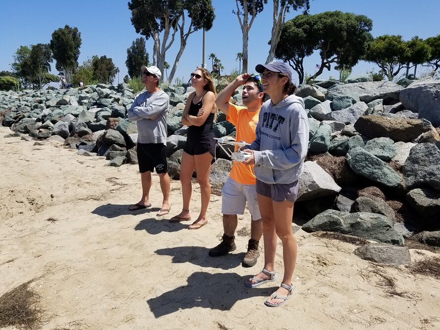

3 minutes read

In July of 2019, the Citizen Science GIS drone team, Dr. Bo Yang, Michael Feinman, and Hunter Searson traveled along the US Pacific Coast to coordinate drone mapping with multiple research institutions to support the NSF eelgrassresearch project with $1.3 million in funding.
Pictured: Dr. Bo Yang, Michael Feinman, Dr. Kevin Hovel, Chelsea Bergman, Erica Pollard, Leah Harper. The drone mapping fieldtrip in Southern California was carried out in San Diego, CA. The UCF drone team used UAS/drone technology to completethe eelgrass mapping. Dr. Kevin Hovel, Chelsea Bergman, Erica Pollard, and Leah Harper from San Diego State University (SDSU) and Smithsonian MarineGEOsupported the in situ measurement collection.
Kevin, Chelsea, and Leah are deploying the sampling transects and GCPs for drone mapping
Before Bo and Michael arrived in California, many months of pre-planning was required to coordinate the trip. They planned around obstacles like The drone mapping plans, imagery processing and correction, FAA restrictions, local regulations, and equipment needs.
Drone Orthomosaic imagery for Chula Vista
The UCF drone team arrived at San Diego on July 08. The drone mapping was carried out for 5 of the eelgrass sites for, Chula Vista, Fiesta Island, Kendall Frost Reserve, and San Dieguito.
All research imagery has been collected byFAA Part 107 pilots with permits and authorizations where necessary.
The drone training coursein action with the UCF drone team and Partners The UCF drone team also developed training courses to teach partners on flying drones for collecting data and processing data. This training course contains topics on flying DJI drones, Preflight protocols & Planning, FAA part 107 examination, Drone2map user guide, and ArcGIS based drone image analyses. Michael led the tutorial with hands-on drone training, while Bo led the drone image processing and data analysis in Geographical Information Science (GIS) and Drone2Map from Esri.
Bo and Michael meet with Lain at the Esri User conference 2019 at San Diego During our last day in San Diego, Bo and Michael went to the Esri 2019 User Conference and meet with Lain Graham, who is working at Esri and is current UCF Sociology PhD student working with Dr. Hawthorne and Citizen Science GIS staff member. The Esri User conference is the largest GIS and remote sensing user conference in the world. It's great to share our drone mapping work and eelgrass drone mapping project with Citizen Science GIS and Esri.
The UCF drone team successfully finished the drone mapping for the eelgrass site in San Diego. The next site is Prince of Whale (POW) island, AK with University of Alaska at Fairbanks. Stay tuned for more from #citizensciencegis
See below for the vlog (edit by Michael Feinman) of the field trip, follow us on Facebook, Twitter, Instagram, LinkedIn for #citizensciencegis
Updated: July 25, 2019